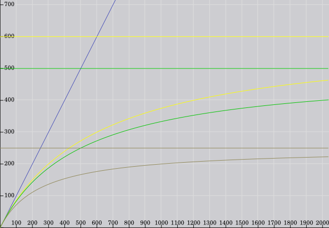

Intended to supplement the official FAQ section, this is a compilation of Less-Frequently Frequently Asked Questions and their answers.
Let me know if:
You have a better source for an answer.
There are any questions that you think should be on here. (Preferably with the answer or link(s) to it :P)
You think that something could use better wording/phrasing/layout. (Again, preferably with a suggestion.)
I've started attributing questions and answers (write-ups, formulas, etc.) to who I got them from (read: name is link where applicable), rather then as part of the 'general thank you' at the bottom.
If I missed you, I apologize. Send me a PM, and I'll 'fix it'.
A good place to start, would be reading the (plentiful, basic and enormously useful) documentation: Median XL Ultimative Documentation, Median XL: Ultimative Forum or in wiki format at the Diablofans Diablowiki.
If you're looking for something more basic - introductory even - and newbie-friendly, check out Trucidation's Median XL wikis:
The LFAQ will not answer the following questions. Reasons included.
Common sense says that before you worry about farming, you play one or two chars, not even necessarily all the way through, just to get an idea of how the game plays.
From experience, you can finish all the "normal" game, at level 120, as well as (at bare minimum) all of the 'Easy'-rated uberquests, without farming for items or Experience; with just the equipment you find / make, having played on /players 1.
Another thing:
Median XL is not cLoD.
Being a "Diablo pro" will do you little good in MXL.
Some of the best items in the game are rares, or rare-based (read: Crafted items).
Farming with your first character = you have no idea what items you're looking for, and you're guaranteed to overlook some good ones.
...
You still want an answer? Fine. No problem.
Q: What is the best character / build?
A: The best build is the one that complements your play-style the best.
Really.
Also, no character is *always* better then any other, let alone all others.
Also, no build is *always* better then any other. (Let alone all others.)
Also, "best" is a fashion thing, a.k.a. Flavor of the Month.
What answer you'll get depends on what's in vogue at any given time.
It has nothing, necessarily, to do with which char / build is objectively better.
One of the things I, personally, love most about Median, is that, no matter how you allocate your skills, (almost) any build is "hell viable" as it were.
Just pick your skills, and start playing.
Worst comes to worst; look down. There's a char respec tool (linked in the links section, below).
Q: Which class / build should I play / is most fun?
A: Fun is subjective.
This question has been asked many many times. 'Search', and you'll probably find a general play-style list.
Q: I'm playing a
How can I make my char better?
A: Too specific a question.
General answers are spread throughout the LFAQ and the MXL Bestiary (on a case to case basis), as well as various previous threads which have already asked the same questions.
Q: What's with all the blue text I'm seeing people write?
A: Blue is the forum's Official Sarcasm color.
Or, in simple English:
Blue text = poster is being sarcastic.
Q: Where are the best places to level?
A: It is the opinion of the author that, since you can get from level 1 to 120 during the course of a regular /players 1 game, before ever reaching Destruction ubers (because those are the only ones that count...), there is no need to grind/rush/powerlevel.
Also, the fashionable Exp hotspots change.
Q: Where are the best places to farm [gold, rare, unique, sacred unique, set, runes, UMOs]?
A: Read the Pearl of Wisdom. It lists the biased areas.
Also:
Now... Down to business...
Questions sorted intuitively (I think), by commonness and by subject:
Index:
(Section header = Hyperlink, Section header = No hyperlink (same post as above linked header)
Basics
Recommended / Required Reading (Resource links)
Skill-related basics
General basics
%Gold Find (%gf), %Magic Find (%mf), MO and Socketable basics
Cap-related misc. basics
General damage basics
More general basics
Item and Crafting related
Item Idiosyncrasies
Proc / %CtC & oSkill related
Passive Damage Sources related
What modifiers does my attack carry?
Blind / Freeze related
Skill Next Delay list
Tools
Known Bugs
Naming Conventions and nomenclature:
Hard Skill Points / Soft Skill Points are simply called Hard / Soft Points.
Merc refers to Mercenary, Hireling, etc.
+% Spell Damage = Combined +% Fire, Cold, Lightning, Poison, Magic & Physical Spell Damage of equal value.
+% <element> Spell Damage = Generic single element.
Likewise for -% Enemy resist.
Magic Resist reduces only Magic damage.
Magic Damage Reduced (MDR), on the other hand, reduces F/C/L/M/Ph damage.
EWD is Enhanced Weapon Damage.
TCD is either Total Char Defense or Total Char Damage (= EWD), depending on context.
%mf / %gf / MO / UMO should all be self-evident.
Check the Acronyms of Median (linked below) if you don't know them (or others).
Proc used to refer to %CtCs.
It's also used as the verb. (i.e. 'to proc a %CtC')
So use Ctrl + F for searching if you have a cue!
Basics
Recommended Reading
- Slightly Advanced Basics -
FAQ & Mechanics Guide, by BassToMouth.
For detailed information explore the appropriate page in this documentation or ask your question in our Newbie help forum
- Elemental Damage Mechanics -
How +% spell damage works, by Brother Laz.
Poison damage explained, by nimrod.
- Multiplayer -
The Sin War, the website of our Ultimative Realm; maintained and supported by the awesome aahz and nomercy4you.
How to join our TSW realm
TSW Rules
*Area Guides (Spoilers)*
*(More or less) Technical info*
|
 | ||||||||||||||||||||||||||||||||||||||
Point of Interest:
You can disable the menu music with ctrl + M.
The Cube Recipes will benefit you greatly. Find them here.
Particularly noteworthy (examples) are:
"Cube recipes" wrote:
Reroll superior/magic/rare itemThese recipes reshuffle the modifiers and socket count on a superior, magic or rare item and return an item that is similar to the original, but with different modifiers.
Non-magical item + Oil of Renewal -> reroll item
Magic item + Oil of Renewal -> reroll item
Rare item + Oil of Renewal -> reroll item
"Cube recipes" wrote:
Reroll magic to rareTurn any magical item into a rare item. Note that this will slightly lower the output item level to 85% of the input item level, making the magical modifiers that can spawn on it slightly weaker.
Magic item + Oil of Enhancement + rune -> reroll item as rare
"Cube Recipes" wrote:
Affix burn recipeThis explosive alchemical combination burns all magic off an item, returning it as a basic damaged low quality item. This recipe is useful to prepare an item for a runeword.
Any item + Catalyst of Destruction + rune -> reroll item as low quality + Catalyst of Destruction
Skill-related basics
At character level 120, your natural skill limit will be:
for level 1 skills: 22
for level 6 skills: 21
for level 12 skills: 20
for level 18 skills: 19
for level 24 skills: 18
for Uberskills/Ennead/BRC skills: 7
There are charms and items which can increase the natural skill limit.
The total increase possible from charms, as of Ultimative XI, is +13 (sometimes +12 for Barbarians, if you already have points in Ancient Blood) to max natural skill limit:
Thanks to Siddharth353: http://www.medianxl.com/t3074-max-skill-level
Maximum Skill Level Increased by X:
1. The ladder only amulet Khanduran [gives 1 increased level]
2. Taha Gloves Runeword [gives 1 increased level]
3. 6 x Fire Body Armor Runeword [gives 1 increased level, unless you're a Barbarian with points in Ancient Blood skill]
4. Legacy of blood charm [gives 2 increased level]
5. Crystalline Flame Medallion Toraja upgrade [gives 1 increased level]
6. Ennead challenge [gives 1 increased level]
7. Moon of spiders charm [gives 1 increased level]
8. Mini games crowned, mirror mirror, witch queen [gives 3 increased level]
9. Bremtown upgrade [gives 1 increased level]
10. Laz charm upgrade [token recipe upgrade] [gives 1 increased level]
11. Qor Sorceress Body Armor Runeword [gives 1 increased level, Sorceress Only]
SP Total: 12
SP Total for Barbarians: 11 (12 if you don't have points in Ancient Blood)
Realm Total: 13
Realm Total for Barbarians: 12 (13 if you don't have points in Ancient Blood)
Separate and worth noting are skills/synergies that can increase the skill limit.
These are: Paladin's Holy Melee skills to Lionheart, Light and Shadow to Scourge, the Druid's bow skills to Elfin Weapons, the Amazon's spear skills to Lioness, Necro-attack totems (they give each other +max skill), Ancient Blood to all Barb skills, as well as Shamanic Trance to the Ancestor Spirits and any other Stance to Kraken Stance.
Point of Interest:
Even with +max skill limit synergies, you can't put more than 31 Hard Points into the 7-point-limit skills.
(This is due to the hard coded limit of 'skill Hard Point max = Clvl - Reqlvl'.)
Q: What are Hard/Soft points?
A: Hard Points = the points you get from a level up or as a quest reward (Tyrael...).
In MXL you get 134 HP's (119 from level ups + 12 from quest rewards + 4 from the 'Dogma' actboss tokens).
Put those points into a skill, and you are able to get the synergy or self synergy bonus.
Soft Points = Stuff you can get from Items or Charms (+3 to all Skills on an amulet or +1 on a ring etc...).
Self-/Synergies do not benifit from Soft Points.
Skill Level (slvl) = Hard/Base Points + Soft Points
(Writeup by [clueso])
Q: Do soft points count for Synergies?
A: No. Hard points only.
N.B. Shaman's Path & Greater Manifestations' bonuses, Force of Nature, Bacchanalia & Witchblood's effects and Light & Shadow -> Vessel of Judgement are the exceptions to this rule.
(This is because they're all 'dummy passives' and not truly synergies.)
Also, see 'Charges', in the Known Bug section.
General basics
Q: At what level should I do the Uber Quests?
A: ...
Introduction. Required Reading. First line.
Scroll through the Pearl of Wisdom. It has a page with information for each Uber, as well as the recommended level for it.
(Well no, it gives you the monster's level.
But that's a not-bad indicator, depending on your /players and build / gear, of course.
Carpathian_Cookie was kind enough to type and format it. See below.)
Q: How many kinds of Signets exist? How do they work?
A: Three of them, and the way of using them is pretty obvious, so please read the ingame description. Alternatively, though, you can put them in your belt to eat them.
Signet of Learning: +1 extra stat point. (500 Signet cap)
Signet of Experience: + (250*clvl) exp.
Signet of Greater Experience: + (750*clvl) exp.
Signet of Skill: +1 skill point. Caps at 3.
(Writeup originally by NexX, updated.)
Note: Only Signets of Learning count against the 500 Signet (of Learning) cap.
Q: I just finished Hatred/Terror, and my Leech stopped working!
A: Normal difficulty has a 1/4 (25% effectiveness) penalty on leech.
In Terror, your leech effectiveness is lowered to just 1/50 (2% effectiveness) penalty.
Destruction then pwns it completely, to 1/100 (1% effectiveness) penalty.
Example: You have 25% life/mana leech.
On the Hatred difficulty you have an effective leech of 25*25% (since there's a 1/4 penalty) = 6.25% effective leech.
On Terror, 25*7.5% = 1.875% effective leech.
On Destruction, 25*2% = 0.375% effective leech.
Median 2008 values (kept for reference (and comparison) purposes):
There's a 1/5 (20% effectiveness) and 1/40 (2.5% effectiveness) leech effectiveness penalty on Terror/Destruction respectively.
Example: You have 25% life/mana leech.
On the Hatred difficulty you have an effective leech of 25% (since there's no penalty).
On Terror, 25*20% = 5% effective leech.
On Destruction, 25*2.5% = 0.625% effective leech.
Q: What's the base Mana Regeneration rate in MXL?
A: Base mana regen is quadrupled from cLoD.
Q: What are 'Legacy Items'?
A: Check the 'Dictionary'. (Linked as A Dictionary of abbreviations (& more) in Median XL.)
Uberlevel area / monster levels, courtesy of Carpathian_Cookie
Dungeon Uberquests
* Updated for BRC challenge levels' alvl reduction.
%Gold Find (%GF), %Magic Find (%MF), MO and Socketable basics
Q: Does +%MF affect UMOs? Or Runes?
A1: No.
A2: +%MF increases your chance of finding magic+ quality items.
UMOs however, despite their name, aren't actually a different quality then the regular ones.
Likewise Runes. They aren't of magical+ quality, so %MF has no effect on their chance to drop. That comes only from the % each item-type has to drop in the monster's TC.
The only way to increase your chance of getting them is to use the Area with the appropriate Drop Bias.
Q: I used Mystic Orbs on an item. Now I want to do X/Y/Z to it. Will it keep the MOs?
A: If whatever you're doing says that it will reroll the item, then no. Otherwise yes.
Q: Can I remove MOs from an item?
A: Not directly.
That said..:
Q: I socketed Gems / Jewels / Runes in an item. Now I want to do X/Y/Z to it. Will it keep them?
A: As above.
Iirc the only recipes that will keep the socketables in an item is cubing with an MO, and the 'lucky upgrade'.
UNSOCKET the item first, unless you don't mind losing its socketables.
Q: Can I make Runewords from Magic/Rare/Crafted/Honorific/unique items?
A: NO.
As the official FAQ says, Non-magical items only.
This means any low quality/normal/superior or non-magical Ethereal/Superior Ethereal items.
Q: Does the 'Stun Attack' modifier on my item work with Skill X?
A:
Q: There's something screwy going on with my Merc.
A: See Known Bugs section.
Cap-related misc. basics
-% Enemy Resist?
A: Resist cap out at -100%. Anything beyond that is pointless.
(i.e. If a monster has 0% res, you need -100% to reach the limit.
If -50%, another -50% will get you there.
If 99% (i.e. Highest non-immunity possible), you'll need -199% to hit the floor.)
Slow(s Enemy)?
A: Against: regular monsters: 95%, Bosses/Players: 50%.
Also, a single source of slow is capped at 90% for monsters.
If you apply the same type of slow twice, the one you applied last is the one that counts.
Absorb <element> #%?
A: 40% for each element.
Poison Length Reduced By?
A1: 75%, but there's supposedly a -100% penalty in Destruction so 175%.
(A by Brother Laz)
Curse Length Reduction?
A1: 100%, which makes you immune to curses.
Note: Not all Curse / Debuff stats are affected by this item modifier.
(e.g. Slow, Death Touch, etc.
To the best of my knowledge, if it isn't healed by the Town Healer / a well, it's unaffected by CLR.)
Damage Reduced by #, Magic Damage Reduced by #, # Absorb?
A: None of them are capped.
Q: What is this Damage Cap I keep hearing about?
A1: Excessively simply put, it is a point beyond which you do no damage.
A2: Damage Caps, Rollovers, and other #'s
Q: At what point does damage cap?
A1: {((2 ^ 23) - 1) / 100 =} 83886 damage (per frame where applicable) for each type (Physical, Magic, Fire, Cold, Lightning, Poison) separately.
And it rolls over at 167772.
A2: Source / detailed explanation.
(Thanks go to aerial for the link / correction.)
Note:
If you're reached damage cap (Not mix-element / Poison LCS), report to Brother Laz.
Thank you, and have a good day.
Q: Does the damage cap exist in all versions of Diablo 2?
A1: It exists in all versions 1.09+, except 1.10.
Pre 1.09, idk.
Q: OMG what happened?! I started a game. My life/mana was filling up, and suddenly it's empty and won't fill!
A: You've managed to gain over 2^15 or 32768 HP/mana.
The visual display rolled over and is showing only the amount over 32768, and you'll see the full orb when you go under that amount.
Note however, that although there's no problem here with HP, the client considers you to only have the amount of mana over 32768.
So, if you have 33768 mana, you can only cast spells/skills with a mana cost lower then 1000.
If you drop back under 32768 mana, you will see (and be able to use) your full (current) mana pool.
Note:
If you're rolled over your Life or Mana, report to MarcoNecroX.
Thank you, and have a good day.
General damage basics
TCDef is similar.
Formulas for defense with and without Runemaster respectively.
With Runemaster:
(Total Item Defense+(Dexterity/4))*(R*RMlvl)+Total Item Defense+(Dexterity/4))*(Total Character Defense)+(Total Item Defense+(Dexterity/4)*(R*RMlvl)+Total Item Defense+(Dexterity/4)) -- Assuming Runemaster is applied before TCD.
Without Runemaster:
(Total Item Defense+(Dexterity/4))*Total Character Defense+(Total Item Defense+(Dexterity/4))
Q: So what's the difference between +%ED and +%EWD?
A1: +%ED increases your weapon's base damage, whereas +%EWD increases your *total* physical damage.
A2: They affect different parts of the damage calculation.
+%ED is part of the first half of the above formula, which is your weapon's base damage.
+%EWD is part of the second half of the formula, which multiplies your total base damage.
Q: So are +5% EWD Mystic Orbs better than +15% ED Mystic Orbs?
A:As a rule, a low percentile bonus on a large base is more effective then a large percentile bonus on a small base.
e.g. 100 + 5000% = 5,100
Bottom line: It depends on your base damage. If it's low, +%ED will probably be the better choice.
Once it's high (depending on how high 'high' is), +%EWD becomes the more beneficial.
Dual Wielding
This list is by no means comprehensive. It's just to give you the idea.
Modifiers will be added as I think of them, after verification.
"srulz" wrote:
This list may be good to be added:Disclaimer: I don't guarantee the source's accuracy, but since most of D2's mechanics remain unchanged anyway, this should be too:
Quote:
The only things that work from the off-hand weapon are:* Skill bonuses
* Attribute bonuses
* + to Life/Mana/Maximum Stamina
* Maximum Life/Mana %
* Replenish Life
* Regenerate Mana %
* + to Life/Mana After Each (Demon) Kill
* % Damage Taken Goes to Mana
* Attacker Takes (Lightning) Damage
* % Extra Gold From Monsters
* % Better Chance of Getting Magic Items
* +% to Experience Gained
* Reduce All Vendor Prices %
* + to Light Radius
* % Increased Chance of Blocking
* % Faster Run/Walk /Hit Recovery/Block/Cast Rate
* + Defence (vs Melee/Missile)
* +% Enhanced Defence
* (Magic) Damage Reduced (by %)
* Resist +%
* +% to Maximum Resist
* + Absorb (%)
* Poison Length Reduced by %
* Half Freeze Duration
* Cannot be Frozen
* +% to Skill Damage
* -% to Enemy Resistance
So, pretty much nothing that has to do with applying damage works, except for elemental skill damage and -res.
More general basics
Q: Can I stack Elixirs?
A: Yes, but only 1 Elixir can be active at a time.
Drinking another of the same will stack its duration - just like any other potion - but drinking a different one will overwrite the previous one.
Note: This is true of Mercs too.
(Thanks to SKIPPNUTTZ for the correction about Elixir stacking.)
Q: What does Next Delay mean?
A1: When hit by an attack/skill with next delay, the target cannot be hit by another ND skill until # frames have passed.
A2: http://median2008.wikispot.org/Next_Hit_Delay
A3: For a list of ND on skills, see the Skill Next Delay List, below.
Q: "Worship the Crack Monkeys!"? Whaaa? o.O
A: Nothing. It does nothing. It's Flavor Text. Just ignore it.
Q: How does the engine resolve an attack?
A: In this order:
If the attack requires an AR check, roll AR vs Def. Then,
If the attack does Physical damage: % chance to block. Then, {*1}
Avoid is rolled (for anything that doesn't ignore it.)
Assuming a hit is landed:
"LorveN" wrote:
damage dealt is reduced by above mentioned 'modifiers' in a specific order. The order is as follows:
1) XvX penalty (PvP penalty = -5/6)
2) Sorceress Energy Shield
3) Necromancer Bone Armor and/or Druid Cyclone Armor
4) Integer DR/MDR
5) Percentage resists (including DR%)
6) Percentage absorb
7) Integer absorb
The damage is then 'applied' to your HP.
If it's more than 1/12, Hit Recovery triggers. {*2}
% when struck, if Physical damage, and % when take damage. (Order: Unsure.)
life/mana when struck (if physical)
That's all, afaik.
{*1} This deduced from
"Arreat Summit" wrote:
Re: Berserk
A defense of 0 will let you block all the time, thus quite often hinder you from doing anything else. Consider not wearing a shield.
{*2} This part is simplified, not completely accurate.
For the full, accurate answer, check D2Library's FAQtoids.
Item and Crafting related
Reroll the item, and try again.
Q: %ED on items is capped at 350%. How do I pass it?
A: For a magic+ quality item: +%ED socketables.
For Runewords: Here's how to get over 350% enhance defense on an item. I'll use Truce as an example.
1) Get the desired base item (Sacred Plated Belt)
2) Make the item Superior
3) Reroll until you get 50% to 60% ED (60% ED)
4) Try Lucky Recipe for another 40% ED (60 + 40 = 100% ED) if fails go back to 3.
5) MO item with 15% ED, X times. The number will be (120 - rw level)/2 in this case that's 120-98 = 22/2 = 11 times (11*15 = 165 + 100 = 265%ed before making the runeword)
6) Make runeword. Aim for the top end ED%, in this case 350, if low unsocket and try again. (265 + 350 = 615% ED)
Note: +%ED/lvl, such as on the 'Dragonheart' RW armor, is additive with %ED, and doesn't count against the 350% ED limit.
Q: Why do you have to MO items before RW'ing them? Doesn't it work if you don't?
A: You have to add the MOs before hitting 350%, else they do nothing.
This is because MO's add to the properties of the base item, and the runeword is in a sense a "second base item". Thus, both the base item and the runeword are capped at 350% ED, so theoretically you could have a 700% ED runeword. Theoretically.
(Note that, at this time, that isn't actually possible, due to rlvl > 120)
Q: At what ilvl can the 'indestructible' modifier spawn on a jewel?
A: 21+
(Used to be 21-60, but the upper cap has been removed.)
Q: What are the 'Superior quality' bonuses?
A: Weapons: (20 to 60)% ED, (10 to 150)% AR, (10 to 40)% +max durability. 0-2 modifiers.
Armors: (20 to 60)% ED, (10 to 40)% +max durability. 0-2 modifiers.
Item Idiosyncrasies
For this reason, you can't use the 'lucky' recipe on them.
'Any item' MOs don't work on them either.
{*1} (They aren't 'rin' so that they drop only in Duncraig, and to assure that Duncraig isn't flooded with unique-rings dropping all the time.)
Q: What can / can't I do to ethereal items with the cube?
A: Due to the eth bug, no cube recipe that returns the same item ('useitem') with modified properties will work with ethereals. They've all been disabled.
This means:
* No MOs.
* No lucky.
* No Socket-drill.
Reroll works (but won't return as ethereal).
Unsocket works.
Larzuk can still drill holes in an ethereal item.
Q: Is there a way to choose which unique ring/amulet I'll get from the 'unique creation' recipe?
A1: Sadly, no.
A2: The problem with jewels, uniques, and rings is that they have multiple overlapping uniques that spawn off those base items. The output of the recipe appears to be at least level 100. As a result anything with a level req of level 100 or below could spawn at random from the unique creation recipe when used on jewels, rings, and amulets.
Proc / %CtC & oSkill related
Q: Is there any way in increase the power of procs?
A: Yes.
A proc is cast as if you are casting the spell/skill at that level.
Any bonuses it would get were it a skill, it will also get as a proc.
(read: Synergies if available, +% spell damage, Energy, Energy Factor, -%enemy resists, clvl.)
Q: Do oSkills benefit from '+to all Skills'?
A: Yes. Any oSkill will benefit from +taS.
Q: Will character oSkills benefit from '+ to
A: I know that this used to be the case.
Therefore, since the mechanic hasn't (can't, without Code Editing) changed afaik, they still should.
But I haven't checked recently.
Q: Can more than one %CtC to proc from a single trigger-event?
A: Yes.
Passive Damage Sources related
Q: Is there any way to increase the elemental damage of my attack?
A: Use attacks with a high Weapon Damage Modifier.
Passive damage sources are multiplied by it, just like any other damage.
Beyond that -
For more information on How +%spell damage works, see the linked article of the same name in the 'links' section.
Q: What's the difference between the '+Life when struck' and 'Damage reduced by' item modifiers / MOs?
A: Ranged attacks.
LWS isn't triggered by ranged attacks, whereas DR reduces *all* physical damage.
Note: Like Defensive Harmony, Pact of Blood is triggered by ranged attacks. (Since both use a different modifier then items get.)
Q: What modifiers does my attack carry?
A:
- Melee attack: (i.e. Swing Weapon. Hit Monster in Face.) * Adds #-## <element> damage * Deadly Strike * Crushing Blow * Open Wounds * Stun Attack * CtC% attack * CtC% striking * CtC% kill * Leech * Life on hit * Life on melee hit * +% spell damage * -% enemy resists * Life per kill * Slow Target by #% * Hit Blinds Target +# * Hit Freezes Target +# * %Reanimate as - Weapon-based area/missile/splash except explosion (but including post-fix SoR): (i.e. Anything that isn't a Melee attack (or Deathstrike) and does weapon damage) * Adds #-## <element> damage * Deadly Strike * Crushing Blow (x1/2 power) * Open Wounds (x1/2 damage if PvP) * CtC% striking * CtC% kill * Leech * Life on hit * -% enemy resists * Life per kill * Slow Target by #% * Hit Blinds Target +# * Hit Freezes Target +# * %Reanimate as - Explosion (Deathstrike, pre-fix SoR): * Elemental * Deadly Strike * -% enemy resists * %Reanimate as - Spell: (i.e. Anything with damage that isn't affected by your weapon's damage.) * CtC% kill (poison only) * +% spell damage * -% enemy resists * life per kill * %Reanimate as
Freeze / Blind related
Q: When exactly are "+ Blinds Attacker" and "+ Freezes Attacker" triggered? When they feel like it? :/
A1: Despite the item modifier says "Attacker", the truth is that they only work against enemies that successfully strike you in melee and melee only, ranged attackers and casters will be utterly ignored.
(Writeup by NexX)
Q: What do the numbers in "+ Freezes Target/Attacker" and "+ Blinds Target/Attacker" mean?
A1: The Blind/Freeze don't always succeed. Those numbers get slotted into the formula (see links below) that determines success or failure. (Higher number = better.)
A2: Hit Blinds Target
Chance to Freeze.
Q: Is it possible to get Sets / Sacred Uniques with the Chaos Reroll recipe?
A1: No
Q: How does '% Damage goes to mana' work?
A: http://library.planetdiablo.gamespy.com/concept-vulpine.htm Link's dead.
God, I love archive.org.
New link
Q: What does the "increases Nova Charge scatter radius" item modifier do?
A: It means the novas are spawned at a potentially greater distance from the character.
The advantage is that if a nova spawns further away from the monster, you lose a slight bit of damage, but if it spawns closer to the monster, you gain a lot of extra damage, so the net result is positive for monsters further away from the centre.
Skill Next Delay list
Amazon
Skill NextDelay Starstreak 3 Ghost Arrow 6 Fire Pit 0 Pounce 4? Great Hunt 0 Pre 1.D9 Lightswarm (wisps) 5
Assassin
Skill NextDelay Psi Storm 0 Bat Strike (Shock Nova) 5, probably. Hades Gate 4? Black Lotus Strike ? Death Blossom 3 Wychwind 5 (*1) Maelstrom (*1)? Cryobeam 3? Vampiric Icon 25 Beacon 4
Barbarian
Skill NextDelay Bear Claw 4 Stampede 4 T.Slam ? Stormblast 0 Screaming Eagle ? T. God (nova) ?
Druid
Skill NextDelay Blindside 4 Elemental 4 Poison Flash 4 Gamma Field 4 Spore Shot 4 Faerie Fire 5 Pummel (Splash) ? Wildfire 0 Egg Trap 0 Thorn Wall 0
Necromancer
Skill NextDelay Liche Form 4 Parasite 0 VA / VK splash 4?
Paladin
Skill NextDelay Retaliate 5 Hammerstrike ? Merkabah (/Edict of Forbiddence) ? Searing Glow 4? Bloodthorns 0 (1.A9 prerelease) Mind Flay 0 (1.D9) Punisher 4 Slayer ? (1.D9)
Sorceress
Skill NextDelay Arcane Torrent 5 Mana Sweep 4 Pyroblast 4 Hive 4 Time Field 4 Carpet of Spiders 2 Spiral Dance 4 Bladestorm (blades) 3 Arcane Torrent 3 Pyroblast 0? Ice Lance ? Lorenado (*1)?
Other
Skill NextDelay Wyrd 4? Cold Fear 4 Claw Tornado 4 Apocalypse 4 Other Blast Wave 4 Blood Flash 4 Countdown 5 Fire Star 4 Frozen Crown 5 (*1) Glacial Nova 4 Meteor Shower 10 Mon Spike Nova 4 Mon Energy Beam 5 Rune of Mana 4 Shadow Avatar 10 Other Pandemonium 5 Contest Pentagram 4 Other Raven Flight 5 Silver Dart 4 Pyroclastic Flow 2 Ice Bolt Nova 4 Shock Flower 4 Electrobolt 3 Powder Keg 4 Thorn Field 3 Gorefest 3 Medusa 4 Whirlpool 4 (1.D9b2) Earthquake 3? Rune of Mana 4 Ambush ? Cyclone ? Squall Gust ? Disintegrate ? Sunspear 5? (*1)?
(*1)
Initial missile has ND.
Subsequent hits do not.
Blood Thorns previously had an ND of 5 (1.99) and 3 (1.A9 beta)
Bladestorm (blades) previously had an ND of (1.99) 3
Mind Flay, prior to 1.A9b2 had an ND of 3
Q: Can I refill an Unique Arrow Quiver or an Unique Bolt Quiver?
A: Yes, sell it to a shop that doesn't sell Arrow Quivers or Bolt Quivers and has enough space to hold yours, and then buy it back.
Skill Related:
The curses are separated into groups.
Curses in the same group will overwrite each other; will not stack.
Note: The following list is outdated, though (probably) not changed.
(*1) stardragon12-1-8-27-57-52 shows that Hunter's Mark and SoR's curse stack.
Q: I can't find the 'Wyrd' skill.
A: You get it from Mystic Orbs.
They are buyable from Akara in Act I. Drognan in Act II. Asheara in Act III. Halbu in Act IV. Larzuk in Act V.
Q: What does Supermax (or sMax for short) mean? I keep seeing it in guides.
A: As opposed to 'Max', which merely means investing in a skill until you reach its natural skill limit, sMax means adding points over the natural limit with '+max skill level' items or synergies.
Please check the abbreviation dictionary in the future.
Q: Can my minions / Hirelings (Mercenaries) / Reanimates trigger my procs / %Reanimate / etc.?
A: No.
(Hirelings can trigger any proc, ReAnimate, etc. that's on their equipment.)
proc (a.k.a. %ctc) conditions:
Q: What triggers 'on Striking' procs?
A: On Striking triggers any time you actually hit a Monster with a weapon-damage carrying attack.
This includes multi-hits from skills like Retaliate, Wychwind, Faerie Fire, etc.
Q: What triggers 'on Kill' procs?.
A: Weapon carrying attacks or poison attacks that take more than 1 frame to kill their target.
Q: What triggers 'when Struck' procs?
A: When you get hit by a physical attack.
Shield-blocked attacks don't count. Avoided/dodged attacks don't count.
Q: What triggers 'when You Take Damage' procs?
A: Like it says. This includes anything other than damage over time from poison or life drain.
Q: What triggers 'when Attacked' procs?
A: Any melee attack, regardless of whether it hits or misses or you dodge it.
Skill X Doesn't Work!
Q: Hey! I just got Shadow Avatar oskill on my power trip spearzon and she can cast it! Lol! I'm da king now!
A: ... :roll: In any case, you'd be the queen, don't you think? Meh, however.
Yes, that happens and it's not a bug, Shadow Avatar ignores that restriction just like some other special skills do, those are:
Purify, Dark Summoning, Shackles of Ice, Blood Flash and the teleporting skills (Blink, Jitan's Gate, Divine Apparition and Bend the Shadows).
Q: My Barbarian Spirits / MO summons / Edyrem (/ Totems) don't follow me!
A: It's not a Bug, it's a Feature.
Due to an issue with Blizzard's minion AIs, the only AIs that can use more then 1 skill simply don't follow you.
Note:
They will move to engage any enemies they see.
Drag one toward them, and they'll move.
Note:
Once these static (non Totem, duh) summoned creatures engage combat, they have the tendency of going on moving randomly across the screen, even if there is no nearby target. They don't exactly follow you, but they do move a bit.
Q: My Prowl/Angel of Death don't work!
A: Like cLoD Charge, you need to have a 'running start' to use it.
Trying in melee range will simply do a normal attack, however, any damage enhancement coming from the skill itself (read: AR%, ED%... Anything but the poison damage) will still affect your regular melee swing if you try it in melee range.
Q: How do autotargeting skills work? They instantly start shooting at anything within range, but how do they react to multiple enemies?
A: When an autotargeting skill is activated (e.g. Cascade - on shooting, Lemures - on 'Armed' re-target) it instantly scans the area within it's attack radius from the upper left corner to the lower right one. The first enemy it "sees" is the one chosen as victim and attacked.
However, sometimes the client decides that it should attack something else and shows an aberrant animation which has little or nothing at all to do with what's really going on. Also read next question please.
(Writeup by NexX)
Q:
A1: Engine 'feature' (a.k.a. bug). Unfixable.
A2: The anims are 'off' because the lightningfury hitfunc desyncs, meaning you hit something else than what the graphic indicates.
This is a D2 engine bug and affects Lemures, Wraith Arrow, Ricochet, Fairy Ring, Lightswarm, Magic Missiles, Bloodstorm, War Spirit, Crucify, Storm Crows, Broadside, Queen of Blades, Rebound, Guard Tower, Fortress, Blindside, Cascade, Spore Shot, Elemental (pre-1.99d), Hunting Banshee, Faerie Fire, Widowmaker, Frostclaw Totem, Liche Form, Vessel of Judgement, Frozen Soul, Nova Charge and Bladestorm. Removing it is not an option. :P
Spell Timer related
Q: But the timers are too long! They make skills useless!
A: Most timered skills have a built-in way of reducing the timer, be it via Hard Points synergies or simple skill level. Note that some skills won't reach zero timer, never. Timered oskills are usually between those.
Q: If a timered skill has reached zero timer, is it normal that it still gets locked when I use a skill which does have a timer?
A: Sadly, the game's being a little piggish here. There's a display bug with skills whose timer is under 3 frames duration, the game doesn't show the timer, but it does exist and lock as usual until it hits zero frames.
Needless to say, skills with real zero frames timer won't lock out any other, nor will be locked when you use another timered skill.
(This whole section was written by NexX)
What does Skill X do?
Note: They do affect procs of your class' skills
Q: My "Wedding Dress of the Zann" (tiered Unique Ceremonial Armor) has +#-## Moon Queen, but I don't see it in my skills. What is it?
A: It's similar to the Amazon Passive of the same name. It grants Increased Attack Speed, %Enhanced Damage.
And like the Amazon passive, all the bonuses work on all weapons.
Note, however, that coming from a charm or as an oSkill (read: soft points), the %EWD and %ED remain constant.
Note, as of 1.D9, Moon Warrior also grants +Life on Kill from hard points. As an oSkill, you don't get that.
Q: What is that red aura under my/monster's feet?
A: It's Demon Blood Aura.
It gives 28%-51% max life, depending on your clvl (28% at level 1, 51% at 120), as well as +4*clvl liferegen and +3% elementaldamage/slvl.
Q: What is the 'Amazing Grace' item modifier? It appears on every Paladin-specific spear, as well as a few other items.
A: It grants you 5% chance to cast on-attack a kind of immunity shield: 100% avoid for 1.2 seconds.
Its graphic effect is Fade + a blue 'firehit' animation.
Like all other immunity shields, it does not benefit from B/D/C modifiers.
Q: What's that Town Portal thingy on Nihlathak's minion?
OMGWTF! It just 1-shotted me!
A1: What you just experienced was Rathma's Chosen, a Necromancer Uberskill which grants invulnerability to all damage (except damage over time), as well as 25k-50k magic damage/slvl.
Kickass, huh?
Q: What is Elemental Guide?
A: It's an Ice-elemental version of Spirit Guide.
It grants (40% + 10%/slvl) %ED to anyone in a 6.6 yard radius.
It is worth noting that this overrides their own aura that yields 3/2 Defense and 25% DR (requires 1 hard point).
Note:
"NexX" wrote:
the source UMO (HoF) can only give you up to +7 to EG on a single item, further applications do rise other modifiers but this one.
Q: I had UA/HA active but I died! What's going on? The documentation says that it provides an invulnerability shield!
A: UA/HA doesn't actually make you invulnerable. It 'merely' grants 50k damage reduction.
There are some special attacks that can pierce its damage reduction, e.g. Death Projector, Crystal Ball, Astrogha's Frozen orb. Anything that does more then 50k damage will still kill you.
Also, it doesn't ignore poison damage / Life Degeneration / Damage over Time (such as Duriel's Exorcism), so you should take care about high-damage poison attacks since they can lower your HP even to 1 point (for Poison / Life Degen), which means you're nearly dead as soon as the UA/HA duration ends, or just kill you (for Damage over Time, i.e. Exorcism).
Q: Why is the listed damage of Shatter the Flesh so low?
A1: Because it hits 8 times, instantly.
So to get your actual damage, check the skill description or multiply the LCS-listed damage * 8.
Q: How does Trinity (the Amazon Bow Devotion) work?
A1: Like it says. If your attack does #-## <element> damage, it adds its bonus to the max-damage.
Q: Which is more effective in late game: Nova charge or Hive?
A: They're different. NC will do serious damage at close range, but you need to keep an enemy within range to have it do damage and it isn't effective at longer distances. Hive needs to be applied only once (and will do the same damage regardless of distance) and then ticks away for X seconds, making it much more effective for cowards and ranged characters who can do a hit and run or just loiter near enemies and reliably poison them. The downside is that it does less damage per second than NC at full blast.
Q: Skills that convert damage to <element>, will +%<element> spell damage increase the converted damage?
A: No.
A2: The only way to increase a percentile-based's damage is to increase what it's a percentile of. (In this case: Your damage.)
The same is true for Feedback spells, where you need to increase your life/mana as required.
N.B.
Using the appropriate '-enemy resist' will increase the damage done by the converted portion.
Q: How is Fortress with Stances treated by MXL? Is it treated as a spell? Is it treated as a minion? Is it treated as a ranged attack? Would it benefit from poison duration?
A2: Fortress is basically a complicated missile chain. The towers are actually immobile missiles, just like Bloodstorm. As such, they are considered a "spell". Stances don't affect them but since stances affect YOU, Fortress does benefit from stances. Similarly, Bloodstorm benefits from your own Bloodlust.
(A by Borgin)
Minion related
(*1) With the exception of Hatred. In Hatred, an slvl 5+ minion can become elementally immune with +25% minion resists.
Note, however, that this immunity is invisible, and won't show up on the minion.
Minions under slvl 5 are trickier, so I'm not going into that :P
(*2) As of MXL 1.A9, slvl 5+ minions can also become elementally immune in Terror.
Note: Verified, thanks to terryys.
Screenshot or it didn't happen.
Point of Interest: In D2, versions 1.10+, Minions are not affected by your /players setting.
That said, monsters spawned on /p8 do keep the life (and damage & %AR on Terror / Destruction) bonus when Resurrected via Paladin Uberskill.
Q: What level skills do Mercs use?
A2: Merc Skill Levels
Q: If I have several different ReAnimates, am I limited to 1 ReAnimate per kill?
A2: No.
Every kill will roll (check if it triggered or not) all of your %Reanimates.
However, a Reanimation uses up a corpse. So, if you had twenty 10% reanimates, you could get every single one of them from a single kill... but only if there were twenty corpses around... If more than one roll "succeeds", a nearby corpse will spit out a reanimate and explode. If there aren't enough nearby bodies, you won't get a reanimate.
Q: Does %minion damage/%minion health have a cap, or can you just keep adding it up?
A2: Minion life is always uncapped, but minion damage is generally capped at 2k. This is base damage which is ONLY based on slvl; %miniondamage will then heighten this 2k further, as will any spells that increase damage.
Note: Barbarian Spirits have capped Life as well. Shamanic Trance adds obscene amounts of %minion life, and even now they roll over (seems to occur between 135 and 145k).
Minion Resists
Q: How are minions affected by the difficulty-based penalty to resists?
A: Exactly the same way you are.
Resists per difficulty are 0/-50/-100.
That said...
Q: What are the minions' base resists?
A: Every minion gains +15% to all resistances per skill level, capping at +75% at level 5. Items with +% minion resists, as well as curses with -% resists, are applied at the end.
Totems are the exception, they have 0% base resists at all levels and difficulties, and do not benefit from +% minion resists. Lower Resist affects them, though.
Q: What are the minions' max resists (without buffs / auras)?
A: +75% minion resists, will get you to the item-mod cap.
This means that (assuming level 5+ minions):
Q: Is it just me or my Shadowfiends not getting affected by any aura/most of buffs?!
A: It's just you, they do get affect, but they don't get the animation because of bein' too cool for it.
Prebuffing
This is called 'Prebuffing'.
There are a couple of exceptions, though.
The exceptions are Hive and Nova Charge, Queen of Blades, Beacon, Liche Form and Vessel of Judgement.
They will keep the +skills (used for calculating duration) and +buff duration you used when you cast the skill (your prebuff gear), but their damage, on the other hand, is determined when the missiles are created, so they'll inherit your "regular" gear's %spell damage and +skills.
As well, VoJ won't keep prebuffed-L&S bonuses.
Also, see next.
Q: So I did that, and all my extra minions (or oSkill minions) die!
A: This is another exception. Minion stats are determined when the minion is created. Minion quantity, on the other hand, is updated every so often; most particularly when you cast a buff / swap equipment.
And 'excessive' minions that you have will be unsummoned when this happens.
In the case of oSkill minions, your 'natural' amount is 0, so...
This is known as the "Unowned Skill Summon Bug".
Note:
Interestingly, having +skills will allow you to keep specific minions for a short (~30 sec) while longer.
Q: Umm, I just put some signets of experience/gold/learning on my belt and used shift+ 1/2/3/4 to make my merc eat them. It doesn't work. Fix plz.
A: ... You know, the game didn't let you simply drop them in the merc's portrait for a reason, they don't work, they're not suposed to work.
And however, why would you give spendable stat points/gold to your merc? The only usable ones would be the experience ones and helping a merc to level up a bit isn't worth the effort of trying to make D2 understand it and getting it to work.
(Writeup by NexX)
Pet Commands
Q: Wait wait WHAT?!
A: You heard me.
One exception: the Thunderbear oSkill (from the Spirit Mask tiered unique).
It gains any beneficial Pet Command (Read: Not CotH) at x1/4 efficiency.
It's that minion's unique feature.
Monster related
For a list of the Skills and Resistances of monsters check out: Monster Skills & Resists
About Invisible Immunities
[list]Q: I'm trying to do one of the Uber Quests, and I can't hurt the boss! What gives?
A: The boss has an invisible immunity.
See next.
Q: Why doesn't the immunity show up?
A: It doesn't show up on the unit because Blizzard can't code, and I sure am not going to abandon shield auras because of this.
Shield aura + Magic Resistant = Elemental Immunity.
Shield aura + Mana Burn = Huge Elemental resistance.
Shield aura + [element] Enchanted = Single Elemental Immunity.
Shield aura + Stone Skin = Physical Immunity.
Monster-Specific
Q: Djiin, Ifrit! I get hit. I get teleported. The world explodes in Lightning or Fire (respectively) and I die. What gives?
A: They tell you about the teleportation in their description.
See that swirling thing under your feet?
That's what they don't tell you about. It's one of the Assassin's time bomb.
3 seconds. MOVE!
Q: Gargoyles! (Stone Hammer Demons / Stone maul Demons) I hit them. They hit me. The usual.
Then I'm suddenly buried in an avalanche! ARG~!
A: They have a chance to cast multiple Showers of Rocks (as the Barbarian skill) when they hit you.
These SoRs create an 'impact zone' shadow on the floor. Once you see that, you have a ~2 second delay before they land.
Don't just stand there like an ogre. Bob and weave, you fool.
Q: Cruciators / Trap Rats! Cruci-what? Who cares about the small ones! They're cute and shoot fire knives! Better tell me why the big ones are harpoon-shooter machineguns and how to not get wtfmurdered!!
A0: RUN!1oneoneeleven! (Seriously, the fact that something can be killed doesn't meant you must kill it.)
A1: About Trap Rats, well, note that they're stationary and that once they spot you, you'll see they start "looking" at you, doing nothing.
That's their dreaded "stare of pwnage", it lasts like 2 secs until a flurry of giant spines is shot. If you feel like you can give them a beating, go on right when you spot them, if you usually fight in melee you'll possibly be used to tank strong attacks and will deal with them in no time. Remember that they come in packs of 4-5 and that Malah has an unlimited health potion store.
For casters, use the kind of tricky magicks you prefer, no caster that can kill other Act 5 elites will have too much trouble with these. Same for ranged characters. Summoners may want to ignore them or (OMG) waste 2-3 mins of their time for their mobs to kill them.
Avoid using magic element damage, don't stand on a place too long. You'll be fine.
(Editor's Note: Also, getting 100 flat DR makes those Trap Rats a joke on Hatred, and very survivable on Terror still :) )
A2: Cruciators? But c'mon... really? why are you hanging around act3 without maxed resistances?! O_o'
(Writeup by NexX)
Q: Daystars / Deathless! I'm walking around Act 2/5 (respectively), when suddenly flames erupt from the ground, crisping me in seconds!
A: The elite Vampires are to blame for this pyrotechnical cataclysm. (It's called 'Angelfire'.)
Obvious answer 1: Don't just stand there!
Obvious answer 2: Max that fire Resistance!
Now for the less obvious answers.
* Flawless/Perfect Bloodstones in any armor except shields will increase your maximal fire resist by 1%/2% each, respectively, as well as granting a large resistance bonus, as will Rubies in shields.
Gemwords make even better use of this, since you can use resist jewels (for example) as well.
* It's a damage per frame skill, so the amount of damage each hit deals is actually rather low. If you have a source of +# Fire Absorb or # Magic Damage Reduction, this will help alot.
(Angelfire hits 25 times per second. The reduction is applied to *each and every* hit, giving you a 2500% higher benefit then the listed value.)
Note: This actually works.
Unlike most per-frame attacks, Angelfire does not use the MDR 1/25 effect code added to Firewall et. al.
Misc
(*1) The only such skills in Median XL as of 1.Z9 are the Assassin's Phase Bomb uberskill (which reduces enemy elemental resist by a listed amount), the Amazon's Spellbind Ennead skill (breaks Physical immunities; has -50% Enemy DR.) and the Starbreaker SU Mace which has 2% slv1 Starfire on attack (-5% elemental resists).
Q: I have -9835a76r214% enemy <element> resist, but it's still immune!!!
A: Uh huh.
Now READ the previous answer.
Q: How does the '-%<element> enemy resist' item modifier work?
A: It is not a debuff. It is not an aura.
It is a part of the damage calculation, and as such is counted only when damage by the person wearing it is rolled.
Q: Do my minions / hirelings / reanimate / attack totems benefit from my -% resist?
A: That depends.
Aside from the Necro Attack-totems, no one 'inherits' your -% resist, so any of it that you have on your equipment will only benefit any damage that is considered yours.
In other words, what benefits:
What does not benefit:
* For any '-% <element> enemy resist' skill:
Unlike the item modifier, the skills directly affect your enemy's resists.
That being the case, any source of elemental damage to the affected target is increased.
Drop Bias related:
Q: Do all the monsters in Destruction Fauztinville and Toraja have a chance to drop Great Runes, or just the bosses?
A: Every monster can drop Great Runes.
Corpse issues
Q: How many corpses can I have at a time?
A: Up to 16 corpses at a time. If you lose more corpses, no new corpse are created.
Q: Hey, when I die and I had an oskill coming from my gear, I keep it without having that gear piece!
A: It's a bug. When you die, sometimes the character thinks that he still has those oskills and will be able to use them.
However, it happens kinda randomly, so loading on oskill gear and dying won't let you profit from that bug. Oh, also the skills disappear when you put some new gear piece on
Also there's an even wierder version of this bug:
Sometimes when you die with an oskill stance on, you'll respawn in town with regular attack mapped under the rmb, but with that stance overlay and effects fully applied. Still, once you change to some other skill the bug fixes by itself and the stance disappears.
(Writeup by NexX)
Q: Do mercenaries hired at lower levels gain better stats?
A: No. No matter what you may have heard until now, the level at which the merc is hired is completely irrelevant. What does matter is the difficulty in which it was originally hired. A merc hired in Hatred has better stats than the same type of merc hired in Terror, and a merc hired in Terror has better stats than the same type of merc hired in Destruction.
Q: How can I stop those @#(&% bosses from regenerating?
A:
For Dark Star Dragon (for example):
There are three ways:
Also note that these methods only negate natural regeneration. Things such as healing spells (e.g Akarat) will work as usual with Poison and OW.
PMH does negate healing spells, though.
(This and previous writeup, ummm, "borrowed" (and 'translated' to MXL) from Ernir's Things you SHOULD know about Diablo 2.)
Q: Why doesn't the 'Hit Causes Monster to Flee' modifier always work as intended?
A: Works only on regular monsters.
Q: Umm, what the heck goes on in Bremmtown? I mean, if I attack by holding shift I don't hit anything, and if I try to dash with my attack skill in the rmb, I just get to the monsters and then I don't attack!!
A: Actually, what happens is that Howling Spirits have both a very small footprint ("physical" space the monster takes) and a extremely long melee attack range, this makes them pretty hard to target and hit with some melee skills, as well as it stops you from dash-killing.
This is NOT a bug, you actually have aim at stuff and attack, not just clicking and holding until everything dies.
(Writeup by NexX)
Q: How do I use Hamachi?
A: Check out the Madhouse section of our forums
Trading in-game is intuitive, so this is an explanation for option #2.
Method #1:
Create a new character.
Give this character whichever items you are trading.
Method #2:
Create a new character.
Put whichever items you are trading in this char's Private Stash.
Then either:
Send an e-mail with the <charname>.d2s for method #1, or <charname>.d2x for method #2, as an attachment, (Or you can dcc it via most chat programs, but that's more complicated.)
or:
Go to a file hosting site*,
Upload the file, receive link.
Send this link to whomever you're trading with.
(They download the file, and move the items off the character you sent.)
*e.g. Rapidshare-type.
Commonly people use zippyshare.com, since it requires no registration/hassle.
Cautionary tip:
If you're using Method #1 and PlugY, remember that the last page you had open is saved as the character's stash in the .d2s
Method #2 doesn't have this problem.
Q: My framerate is only around 5-10 fps, what should I do?!?
A: Please download a Glide Wrapper, set it up and start playing.
N.B.: YMMV
To do:
- Caligdari's submission.
- "+%life/mana does NOT multiply vit/energy that comes from +%stat mods. " -- penco => Things you should know about D2 has details (re: BO).
Thanks to (in no particular order): Brother Laz, [clueso], nimrod, Delreich, Necrolis, petercobra, Baerk Konnevala, aerial, Borgin, Gravyman, whatever, Osterius, Iwansquall, Smiling Hobo, paduples, Galefury, Ministeak, NexX and anyone else I forgot to specifically name for informational 'contributions' and or write-ups,
Zenra, eXecut0r, Zidane, ElricRequiem, Arc_Razer, BloodAxe, HellWyrm, Dream, Gravyman, Mish, death_arch, srulz, Cardeas, NexX, Guinzburg, Kaniol and Oorsombie for suggestions/corrections.
Visual Aids (for when I find where to put them):
Melee range / Reach
Monster size a.k.a. footprint
Radius / Distance
"Kambala's Offline Tools"
Median XL Offline Tools
Q: How do I downgrade from 1.13 to 1.12?
(Or any other version, for that matter.)
A: Use D2SE.
Known Bugs
Q: After installing the Glide Wrapper, D2 decides that instead of starting up, it's just gonna do a workout of random characters in the upper left corner of my monitor for about 5 minutes, and then it gets the hint and starts up. How do I whip it into shape?
A: This is a bug with the Glide Wrapper and Vista. To fix it, go to your Diablo 2 folder, right click on "game.exe", and go to properties. Go to the compatibility tab, and check "Disable Desktop Composition". You are now good to go.
(Q&A writeup by Koiu Lpoi)
Game Crashes:
Q: In multiplayer, every time I try to Save and Exit, or even in mid-game, I crash out with a "You have been Disconnected" message (other players see "(Playername)'s carrier pigeon was eaten by a hawk"), and all my character progress (and newly gained items!) are lost! T_T
A: You have too many items in your PlugY personal and shared stashes. Diablo 2 can only save files less than (I believe) 8k total at exit. If you're crashing, and items aren't saving, either throw some items out, or temporarily remove your shared stash. Note that this bug only exists for TCP/IP games.
(Writeup by Koiu Lpoi)
Alternatively, there's another solution - just type /save and wait about a full minute before S+E'ing. PlugY will save the file.
Q: The game keeps crashing!
A:
If you're on the English US version of the game, download QuickSFV, and install it. Then get this and this, put them in your Diablo 2 directory, and run them. This will check to make sure all your Diablo II files aren't corrupted in some way.
doesn't check d2char.mpq and d2sfx.mpq, because those are where the CD-keys are stored, and thus are different for each install. Thanks, Blizzard.
Mercanaries / Hirelings:
Q: Umm, my merc got stuck...
A1: Try teleporting (Blinking, rather :P) / using a Town Portal / Waypoint.
If that doesn't 'fix them', ignore them or S&E.
A2: Merc AI is bugged if you 'walk'. Blizzard never discovered this because who walks in d2 lololol. (A2 by Brother Laz)
Quest bugs:
Q: WTF? I just cleared the Den of Evil with my cold sorc and now quest log says I have to kill 654897 more mobs!! I mean WTF?!
A: In short, shattered corpses ( obtained by killing frozen mobs) make D2 angry, that's why old, non-ice immune Shenk was bugged and it's the reason why the quest log says you have to kill 600K+mobs yet. Do the following:
Save and exit, pick up a stick and whack the living daylights outta them, it's the friggin' Den of Evil what we're talking about.
(Writeup by NexX)
Q: I killed Shenk the Overseer (Act 5, 'Siege of Harrogath' target), but the quest isn't completed!
A: Blame Blizzard's crappily coded quest.
Folk wisdom cures:
Diablo 2 known bugs:
Q: My Character Screen/Sheet says X, but Y says Z!
A: It's a fact of 'life'. The Character Screen lies. (Hence: LCS. Lying Character Screen/Sheet.)
An example:
Another example:
Also, a passive source of poison (e.g. WotS) in combination with poison damage on your weapon will (usually) drastically change your LCS-listed damage. See next.
For more about poison damage, read nimrod's Poison damage explained thread (linked above).
Q: My gems are not upgraded by a Gem Shrine!
A: Due to a Diablo II engine limitation, the new gems are not considered gems in some parts of the game.
(From the official FAQ)
Q: I found a Waypoint, but I can't activate it. What gives?
A1: It's an occasional problem with D2 (Map generation?).
Stand on the WP and open a TP, and the WP will become usable.
(Credit for this goes to... Umm, I've forgotten :oops: )
Version 1.10: Charges are considered Hard Points.
This is known as the Marrowalk bug.
Bug: The +% resist bonus(es) from Malah's "Scroll(s) of Resistance" is lost on death, until S&E.
This loss isn't shown on the LCS, though.
This is known as the Anya Bug.
Bug: +%AR with ranged attacks.
To summarize the enormous TL;DR that this used to be:
+%AR works fine on anything except +%AR on a skill.
In such a case, any missiles will consider the +%AR to be +AR, and the LCS will lie, i.e. show % instead of # AR.
Bug: PDR/MDR Overflow, reducing the 'other' type too.
"SSoG" wrote:
There's this little thing in the game called the "PDR/MDR Overflow Mechanic". We're all pretty sure that it's a bug, but as long as it exists and it isn't game-breaking, we might as well benefit from it. A good thread about the topic can be found here. Anyway, the quick and easy explanation is that if you have TOO MUCH PDR OR MDR, then the extra will "overflow" until the end of the damage application equation and negate other types of damage.An example. Let's say you have 20 PDR, 0 MDR, and get hit by an attack that deals 10 physical and 10 fire damage.
Step 1: Reduce the physical damage by PDR. You're now taking -10 physical damage.
Step 2: Reduce the elemental damage by MDR. You're now taking 10 fire damage.
Step 3: Add together all the damage. You're now taking 0 damage.
actually ... it DOESN'T overflow,
what happens is the game does the flat subtraction, but some fool forgot an max(0,x), so it yields a negative number,
and what does the game do to negative damage? It turns it into + life, so technically superflous MDR & DR is turned in "+life when taking damage"(just that its added before the check to see if you've died)
From what I read, there's still a check at the end to make total damage >=0. It's just that this isn't done per type.